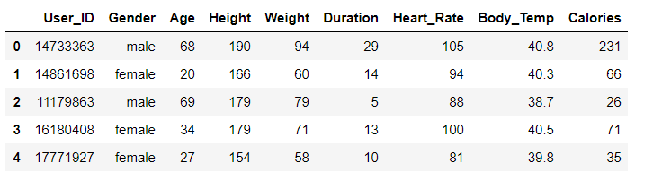
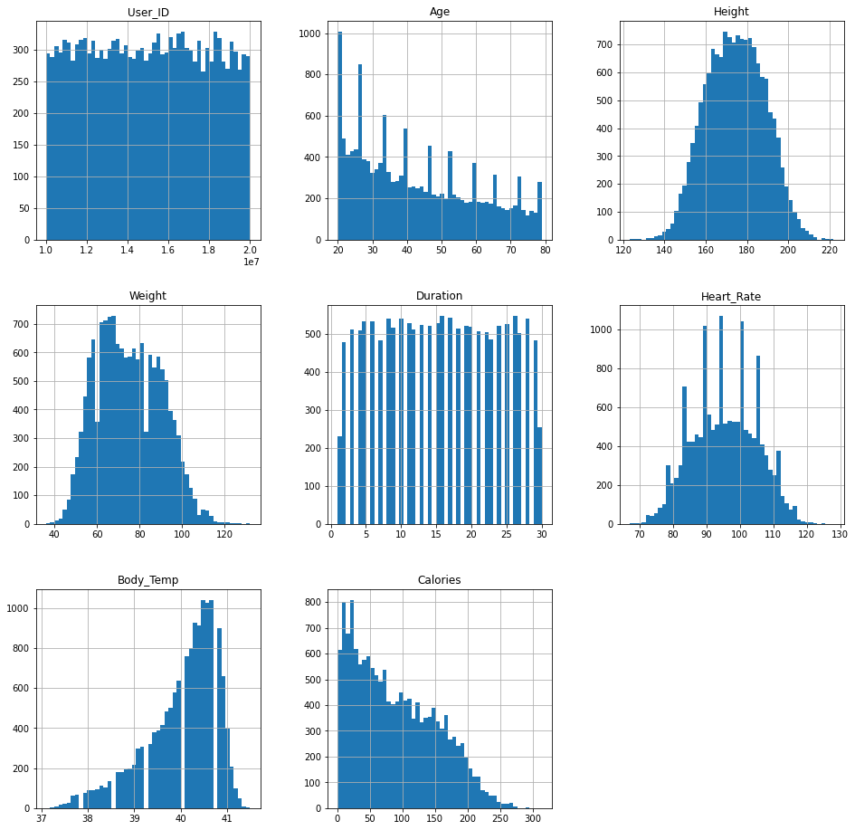
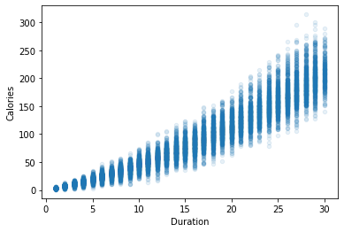
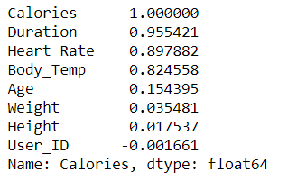
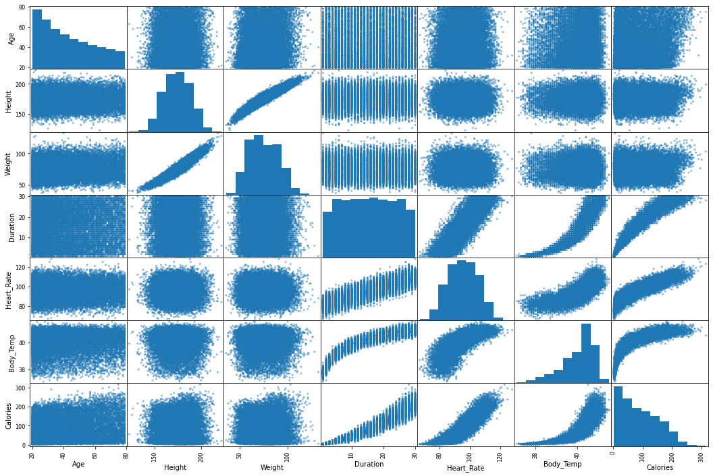
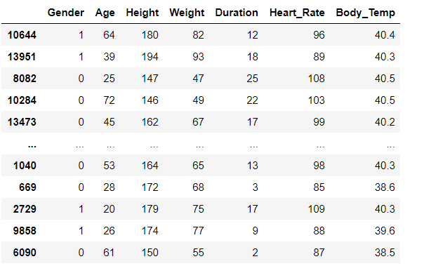

Calories in the foods we eat provide energy in the form of heat so that our bodies can function. This means that we need to eat a certain amount of calories just to sustain life. But if we take in too many calories, then we risk gaining weight.
So there is need to burn Calories, for burning calories we doing exercises and more. for know how much calories we have burn Today we are going to buid a machine learning model that predict calories based on some data.
so let's get started
Download Dataset
Calorie prediction using python
#importing some important libraries and get data
import pandas as pd
import numpy as np
import matplotlib.pyplot as plt
import seaborn as sns
df = pd.read_csv('calorie.csv')
df.head(5)

Let's,visualize the data
df.hist(bins=50,figsize=(16,16)) plt.show()

#Visualizing Duration and Calories df.plot(kind='scatter',x ="Duration" , y = 'Calories' ,alpha=0.1)

We can see that when our duration of exercise increase our burning of calories increase.
Now time to find Correlation between all features.
cor_df = df.corr() cor_df['Calories'].sort_values(ascending=False)

#now visualizing correlations from pandas.plotting import scatter_matrix att = ['Gender','Age','Height','Weight','Duration','Heart_Rate','Body_Temp','Calories'] scatter_matrix(df[att],figsize=(18,12)) plt.show()

droping User_ID column,because it is not very usefull in our data.and separating feature and data to 'x' and 'y'.
x = df.drop(columns=['User_ID','Calories']) y = df['Calories']creating training and testing data.
from sklearn.model_selection import train_test_split X_train,X_test,y_train,y_test = train_test_split(x,y,test_size=0.2,random_state=5)now we are going to do label encoding.
#Encoding from sklearn.preprocessing import LabelEncoder le = LabelEncoder() X_train['Gender'] = le.fit_transform(X_train['Gender']) X_test['Gender'] = le.fit_transform(X_test['Gender']) X_test

you can see that gender column has changed data. 1 for male and 0 for female. we have done encoding because ml only take numerical data.
Now we are building machine learning model.
using LinearRegression
from sklearn.linear_model import LinearRegression lr = LinearRegression() lr.fit(X_train,y_train) lr.score(X_test,y_test)accuracy of LinearRegression :- 0.9674975501970083
Now we are use a RandomForestRegressor
from sklearn.ensemble import RandomForestRegressor rf = RandomForestRegressor() rf.fit(X_train_sc,y_train) rf.score(X_test_sc,y_test)accuracy of RandomForestRegressor :- 0.9978687354129694
in compare to linear model randomforest give more accuracy and is is a very good accuracy.
Deployed project on heroku